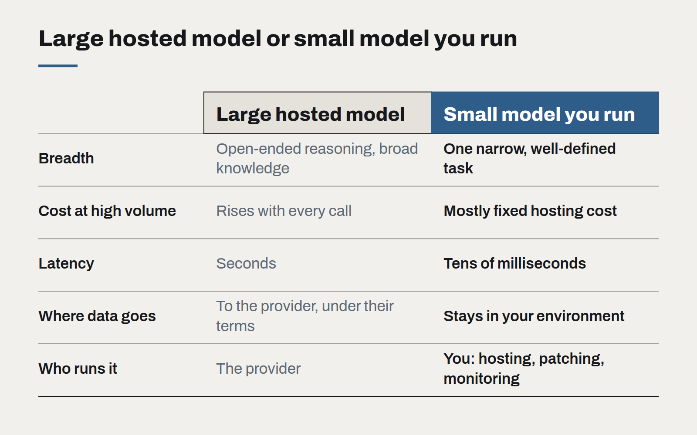

Small models, local data
Not every AI task needs the largest model in the world. For privacy-sensitive, high-volume work, a small model you control is often cheaper, faster and easier to defend.

The public conversation about AI is dominated by the largest models: the ones that write essays, reason through problems and top the leaderboards. They are remarkable, and for open-ended work they are often the right tool. But a quiet shift is happening in how businesses actually deploy AI, and it runs in the other direction.
For a growing share of production workloads, the model doing the work is small — small enough to run on a single modest server, on a laptop, or inside a customer's own environment. These models are far less capable in general. On a narrow, well-defined task, with good instructions and a little adaptation, they are often good enough, and they bring advantages the large models cannot match.
Where small models win
- Data that should not leave. Health records, legal files, client financials. When a model runs inside your own infrastructure — or in a New Zealand region you control — the data governance conversation becomes much simpler. Nothing is sent to a third party, nothing is retained elsewhere.
- High volume. Classifying every inbound email, tagging every document, extracting fields from every invoice. At millions of calls a month, the price difference between a large hosted model and a small self-run one can be the difference between a feature that pays for itself and one that doesn't.
- Latency. Small models answer in tens of milliseconds, fast enough to run inline as a user types or as a transaction is processed.
- Stability. A model you host does not change unless you change it. No silent upgrades, no deprecation notices, no behaviour drift between quarters.

Where they don't
Small models struggle with long, open-ended reasoning, with tasks that need broad world knowledge, and with instructions that are vague or complex. They also put operational work back on your side: hosting, monitoring, security patching and upgrades. For low-volume or exploratory work, a large hosted model is almost always the better choice.
A common pattern: large to design, small to run
The approach we use most often combines both. A large model is used during development to help define the task, generate and label training examples, and set the quality bar. A small model is then adapted to that specific task and deployed for the high-volume path. The large model remains available as a fallback for the cases the small one flags as uncertain.
The evaluation set is what makes this safe. The small model is only promoted if it matches the large one's accuracy on your real examples, within an agreed tolerance, and it is re-checked against the same set whenever either model changes.
Questions to decide
- Is the task narrow and well-defined, with clear right answers?
- Does the data carry privacy, contractual or sovereignty constraints?
- Is the volume high enough that per-call cost dominates?
- Do you have, or can you build, a few hundred good labelled examples?
- Is there someone to own the model in production?
If the answer to most of these is yes, a small model is worth testing. It will rarely be the most impressive part of the system, but it may well be the most economical.
Governing AI use without banning it
Staff are already using AI tools, approved or not. A short, practical policy — backed by tools people actually want to use — protects the business better than a prohibition nobody follows.
Write prompts like specifications
The prompts that hold up in production read less like clever incantations and more like a well-written brief for a new colleague. Treat them as code: versioned, reviewed and tested.
The real cost of an AI feature
The token bill is the smallest line in the budget. Evaluation, review, support and change management are where AI features actually cost money — and where the business case should look first.